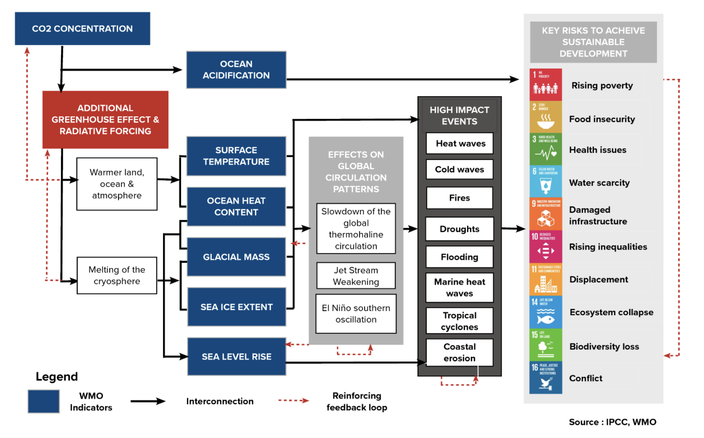
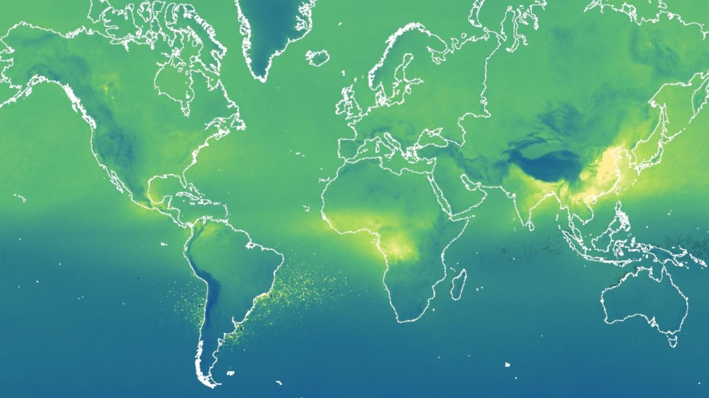
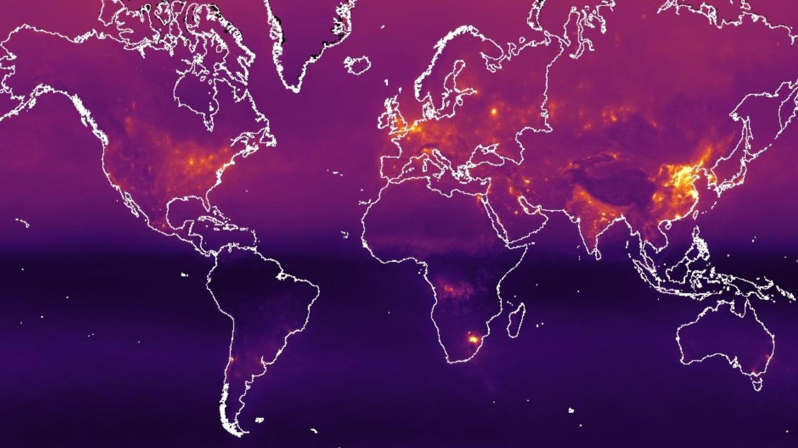
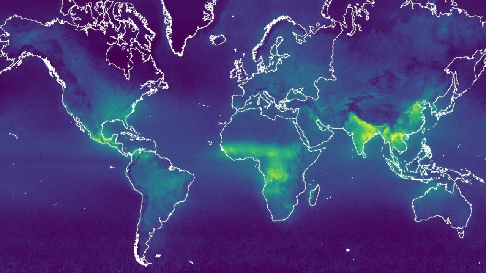
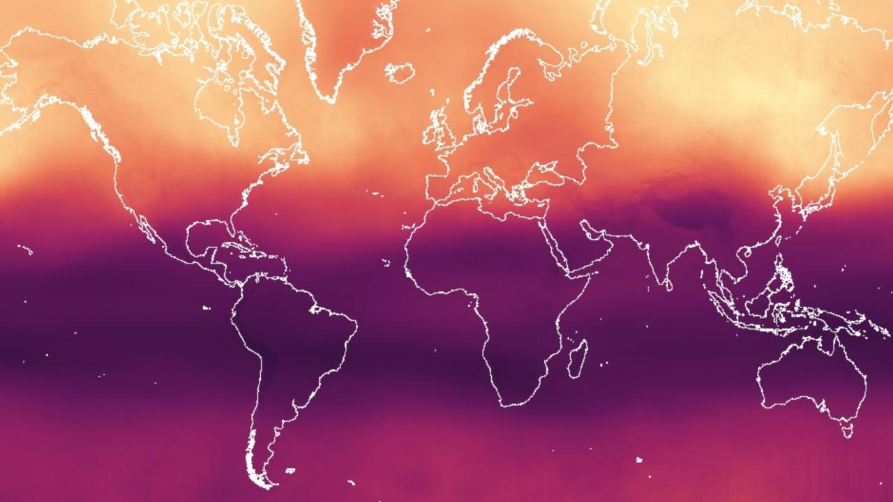
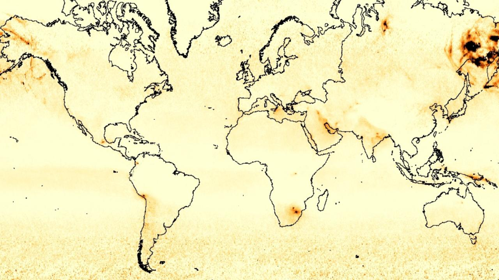
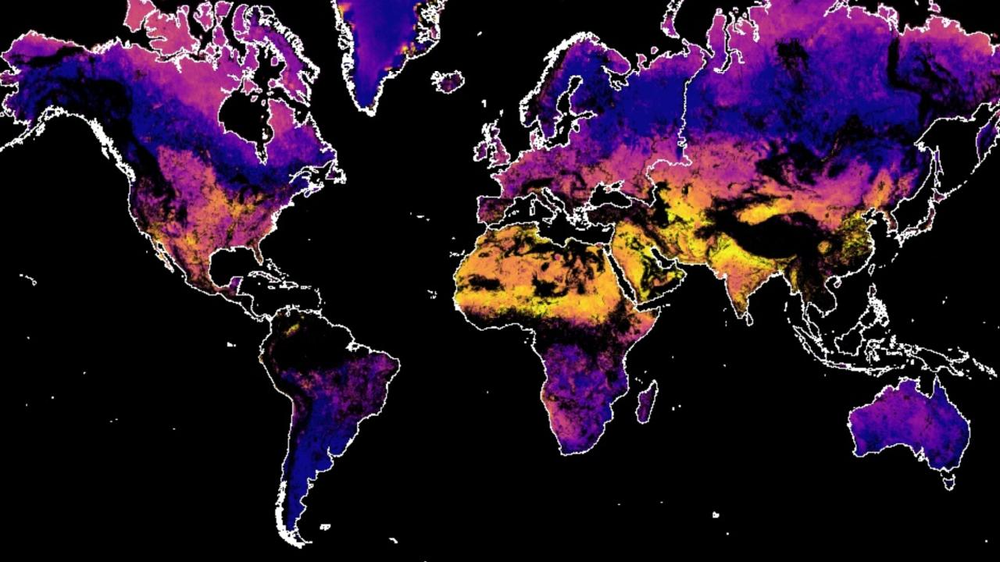
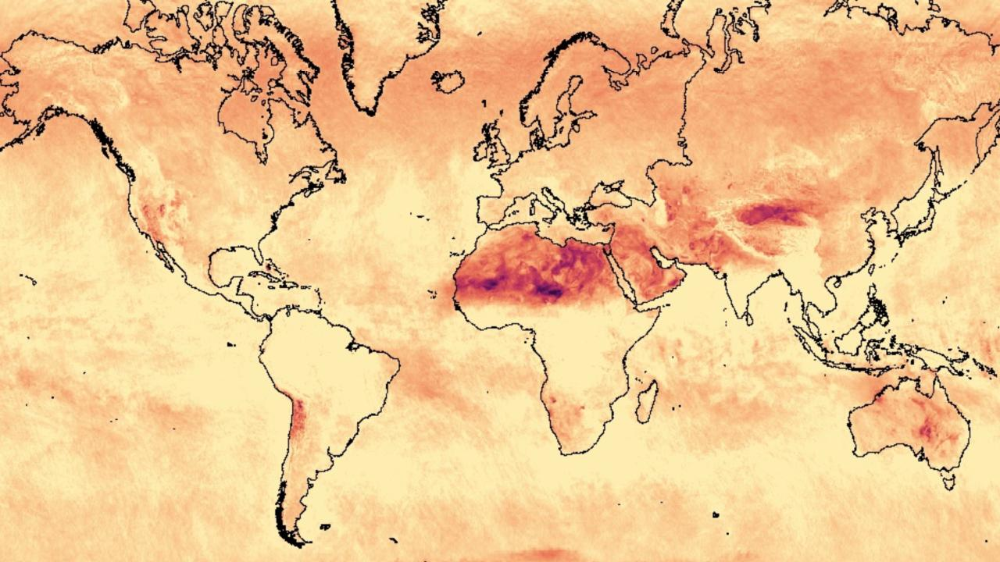
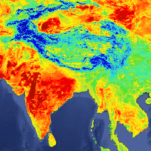
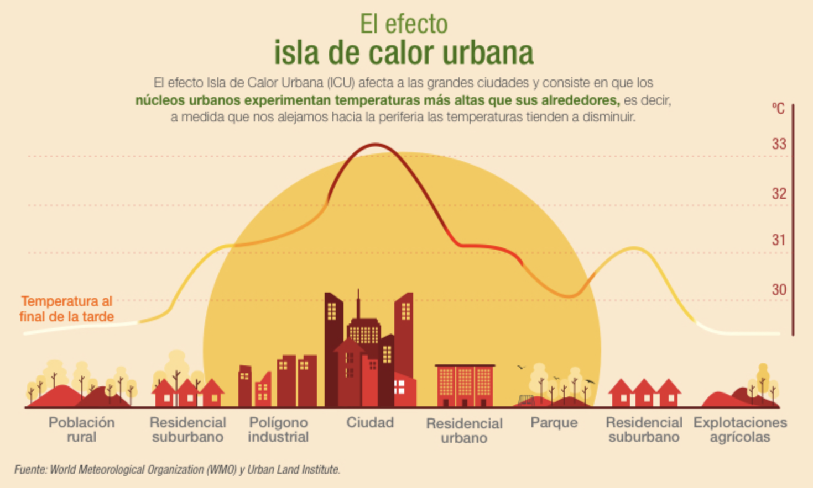

6 Monitoreo Climático
6.1 Introducción
El monitoreo del clima se lleva a cabo mediante una red de sistemas de observación que abarcan la atmósfera, el océano, la hidrología, la criosfera y la biosfera. Cada uno de estos ámbitos se monitorea de diferentes maneras por diversas organizaciones. De manera transversal, las observaciones por satélite contribuyen de manera importante al monitoreo del clima a nivel mundial.

6.2 Matriz de Sustentabilidad
Considerando el marco de referencia (Chapter 3) para entender las dinámicas entre los diferentes econsistemas terrestres, tanto sus causas en específico en su forzamiento externo Section 3.2.2, sus manifestaciones en las variables climáticas de las cuales puden desencadenar anomalías y provocar eventos extremos, haciendo uso de imágenes satelitales se puede construir una serie de indicadores de monitoreo que puedes constituir una Matriz de Sustentabilidad para el Cambio Climático en el CIT, cuyos indicadores podríasmos dividirlos en las siguientes categorías:
- Variaciones Atmósfericas (Gases y Aerosoles)
- Carbon Monoxide
- Nitrogen Dioxide
- Ozono
- Formaldehyde
- Sulphur Dioxide
- Methane
- UV Aerosol Index
- Variaciones Climáticas
- Temperatura
- Precipitaciones
- Monitoreo de Glaciares
- Eventos Extremos
- Sequía
- Aluviones e Inundaciones
- Olas de Calor
- Olas de Frío
- Incendios Forestales (conexión Olas de calor)
- Erosión Costera
- Ciudades y Asentamientos Urbanos
- Incendios Urbanos
- Islas de Calor
- Heladas en Ciudades
- Inundaciones Urbanas
- Cobertura Vegetacional Urbana
- Amplitud Térmica Urbana
- Anegamiento de Asentamientos Costeros
6.3 Variaciones Atmósfericas (Gases y Aerosoles)
The Sentinel-5 Precursor mission instrument collects data useful for assessing air quality. The TROPOMI instrument is a multispectral sensor that records reflectance of wavelengths important for measuring atmospheric concentrations of ozone, methane, formaldehyde, aerosol, carbon monoxide, nitrogen oxide, and sulphur dioxide, as well as cloud characteristics at a spatial resolution of 0.01 arc degrees.
Carbon Monoxide
Sentinel-5P Carbon Monoxide

Concentrations of Carbon monoxide (CO) and water vapor. CO is an important atmospheric trace gas for our understanding of tropospheric chemistry. Main sources of CO are combustion of fossil fuels, biomass burning, and atmospheric oxidation of methane and other hydrocarbons. Sentinel-5P Carbon Monoxide
Dataset availability: 2018-07-10 - Present
Nitrogen Dioxide
Sentinel-5P Nitrogen Dioxide

Total, tropospheric, and stratospheric nitrogen dioxide concentration. Nitrogen dioxide enters the atmosphere as a result of anthropogenic activities such as fossil fuel combustion and biomass burning, as well as natural processes including microbiological processes in soils, wildfires and lightning. Sentinel-5P Nitrogen Dioxide
Dataset availability: 2018-07-10 - Present
Formaldehyde
Sentinel-5P Formaldehyde

Formaldehyde concentration. Formaldehyde is an intermediate gas in almost all oxidation chains of non-methane volatile organic compounds (NMVOC), leading eventually to CO₂. Sources include vegetation, fires, traffic and industrial. Sentinel-5P Formaldehyde
Dataset availability: 2018-07-10 - Present
Ozone
Sentinel-5P Ozone

Total atmospheric column ozone concentration. Ozone shields the biosphere from solar ultraviolet radiation. In the troposphere, it acts as an efficient cleansing agent, but at high concentrations it also becomes harmful to the health of humans, animals, and vegetation. Ozone is also an important greenhouse-gas contributing to ongoing climate change. Sentinel-5P Ozone
Dataset availability: 2018-07-10 - Present
Sulphur Dioxide
Sentinel-5P Sulphur Dioxide

Atmospheric sulphur dioxide (SO_2) concentration. SO_2 enters Earth’s atmosphere through both natural and anthropogenic processes, though the majority is of anthropogenic origin. SO₂ emissions adversely affect human health and air quality and also have an effect on climate through radiative forcing.. Sentinel-5P Sulphur Dioxide
Dataset availability: 2018-07-10 - Present
Methane
Sentinel-5P Methane

Atmospheric methane (CH_4) concentration. After carbon dioxide (CO_2), it is the most important contributor to the anthropogenically enhanced greenhouse effect. It enters Earth’s atmosphere through both natural and anthropogenic processes, though the majority is of anthropogenic origin. Sentinel-5P Methane
Dataset availability: 2019-02-08 – Present
UV Aerosol Index
Sentinel-5P UV Aerosol Index

A measure of the prevalence of aerosols in the atmosphere. Ideal for tracking the evolution of episodic aerosol plumes from dust outbreaks, volcanic ash, and biomass burning. Sentinel-5P UV Aerosol Index
Dataset availability: 2018-07-10 - Present
6.4 Variaciones Climáticas
Temperatura

Referencias: Datasets tagged temperature in Earth Engine
- Terra Land Surface Temperature and Emissivity Daily Global 1km:
-
The MOD11A1 V6 product provides daily land surface temperature (LST) and emissivity values in a 1200 x 1200 kilometer grid. The temperature value is derived from the MOD11_L2 swath product. Above 30 degrees latitude, some pixels may have multiple observations where the criteria for clear-sky are met. When this occurs, the pixel value is the average of all qualifying observations. Provided along with both the day-time and night-time surface temperature bands and their quality indicator layers are MODIS bands 31 and 32 and six observation layers. MOD11A1.061
Precipitaciones
Referencias: Datasets tagged precipitation in Earth Engine
- ERA5 Monthly Aggregates - Latest Climate Reanalysis Produced by ECMWF / Copernicus Climate Change Service:
-
ERA5 is the fifth generation ECMWF atmospheric reanalysis of the global climate. Reanalysis combines model data with observations from across the world into a globally complete and consistent dataset. ERA5 replaces its predecessor, the ERA-Interim reanalysis. Accumulated liquid and frozen water, including rain and snow, that falls to the Earth’s surface. It is the sum of large-scale precipitation (that precipitation which is generated by large-scale weather patterns, such as troughs and cold fronts) and convective precipitation (generated by convection which occurs when air at lower levels in the atmosphere is warmer and less dense than the air above, so it rises). All other parameters are provided as monthly averages.ERA5 data is available from 1979 to three months from real-time. More information and more ERA5 atmospheric parameters can be found at the Copernicus Climate Data Store.
Glaciares
Monitoreo de Glaciares en términos de área (NSWI) y temperatura superficial (TST)
6.5 Eventos Extremos
Sequía
Basándose en diferentes estudios o replicándolo usando como proxi NDVI
Aluviones e Inundaciones
Impacto histórico sobre las condiciones de las viviendas y servicios críticos asociados a inundaciones por desborde de colectores de aguas lluvia, considerando condiciones climáticas, sociales e institucionales históricas y futuras.
Olas de Calor
Anomalías de la variable de Temperaturas Altas
Olas de Frío
Anomalías de la variable de Temperaturas Bajas
Incendios Forestales (conexión Olas de calor)
Incendios Forestales ocurridos bajo anomalías de temperaturas altas consideradas bajo el efectos de cambio climático.
Erosión Costera
Las playas actúan como un sistema de protección natural, donde la acción conjunta del oleaje, la marea astronómica y otros fenómenos climáticos actúa erosionando y/o depositando el sedimento disponible. El potencial erosivo de estos procesos puede causar consecuencias dramáticas tanto para playas como para la infraestructura costera, lo cual ha sido evidenciado en los últimos años en diversas zonas costeras del territorio nacional.
6.6 Ciudades y Asentamientos Urbanos
Incendios Urbanos
Análisis de los riesgos e impactos de incendio en asentamientos urbanos. Considerando la variación en la incidencia de temperaturas sobre 30ºC como valriable de asociada al cambio climático.
Islas de Calor
Las islas de calor son un fenómeno que se produce en aquellas zonas urbanas que experimentan temperaturas más altas que las zonas circundantes debido a la actividad humana. La causa principal son la acumulación de estructuras, como edificios, aceras o asfaltos, que absorben más calor y lo liberan más lentamente, al revés que parajes naturales como bosques, ríos o lagos. A esto se suma el calor y la contaminación generada por el tráfico y la industria. Todo ello agrava las consecuencias del cambio climático en las ciudades y disminuye la calidad de vida de sus habitantes.

Como antecedente en Chile se pretende crear un Plan de Adaptación al Cambio Climático para Ciudades se encuentra en su etapa de generación de información necesaria para su elaboración y conformación de los equipos técnicos de trabajo. Las líneas prioritarias a desarrollar en la elaboración de planes de adaptación al cambio climático para las ciudades son variadas pero en primer lugar se encuentra:
“Planificación y ordenamiento territorial e incorporación de las variables de cambio climático en el desarrollo urbano de planes a nivel local, de manera de enfrentar adecuadamente las olas de calor, inundaciones o sequias, u otros problemas asociados, como también para la adaptación a las nuevas condiciones climáticas”. https://mma.gob.cl/cambio-climatico/plan-de-adaptacion-al-cambio-climatico-para-ciudades/
Heladas en Ciudades
Las heladas (temperatura igual o inferior a 0ºC) afectan negativamente la salud de las personas, especialmente de la población más vulnerable, como niños, adultos mayores, personas con problemas respiratorios y personas en situación de calle. Muchas veces los episodios de frío extremo ocurren en conjunto a una mala calidad del aire en invierno.
Inundaciones Urbanas
Impacto histórico sobre las condiciones de las viviendas urbanas y servicios críticos asociados a inundaciones por desborde de colectores de aguas lluvia, considerando condiciones climáticas, sociales e institucionales históricas y futuras.
Cobertura Vegetacional Urbana
ICV Urbano
Amplitud Térmica Urbana
IATA Urbano
Anegamiento de Asentamientos Costeros
Básandose entudios formales representar espacialmente las ciudades o localidades costeras hayn sufrido el impacto y el riesgo de anegamiento de asentamientos por efectos del cambio climático.